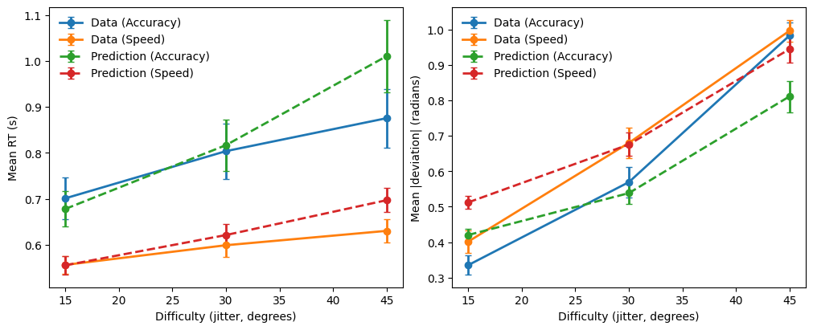

Design Specification: Condition-Specific Parameters (Speed–Accuracy Tradeoff)
This tutorial demonstrates how to implement design specifications in CRDDM—that is, how experimental manipulations are translated into condition-specific model parameters within a single likelihood function.
In the example below (based on the accompanying notebook), we fit a Circular Diffusion Model (CDM) to data from an orientation judgment task reported in Kvam (2019). In this task, participants viewed a dynamic Gabor patch and reported the average orientation of the stimulus by clicking on a circular response scale:

The experimental design includes two orthogonal manipulations:
- a speed–accuracy trade-off instruction (
isSpeed), - a stimulus difficulty manipulation (
jitter∈ {15, 30, 45} degrees).
To model these data, we specify a circular diffusion model with the following structure:
- the decision threshold is condition-specific, differing between speed and accuracy blocks;
- the drift magnitude varies across difficulty levels (indexed by jitter);
- the drift angle and non-decision time (NDT) are shared across all conditions.
This parameterization allows the model to capture systematic changes in response caution and evidence quality induced by task instructions and stimulus difficulty, while maintaining a parsimonious representation of shared decision dynamics.
1. Import required packages
import numpy as np
import pandas as pd
from tqdm import tqdm
import seaborn as sns
import matplotlib.pyplot as plt
from scipy.optimize import differential_evolution
from CRDDM.utility.datasets import load_kvam2019
from CRDDM.Models.Circular import CircularDiffusionModel as CDM
2. Load the dataset
data = load_kvam2019()
data.head()
| Participant | isSpeed | jitter | response | deviation | rt |
|---|---|---|---|---|---|
| 100 | 0 | 45 | 1.9217 | -0.5391 | 1.2595 |
| 100 | 0 | 30 | 1.7845 | 0.32968 | 0.86939 |
| 100 | 0 | 15 | 0.26625 | -0.30658 | 0.8009 |
| 100 | 0 | 30 | 2.157 | 0.15855 | 1.0019 |
| 100 | 0 | 15 | 1.7277 | 0.0072374 | 2.364 |
This dataset includes:
Participant: participant identifier,isSpeed: instruction condition (1 = speed, 0 = accuracy),jitter: stimulus difficulty (15, 30, 45 degrees),deviation: signed angular response deviation (radians),rt: response time (seconds).
3. Define the likelihood with design-specific parameters
The likelihood function below constructs trial-wise drift vectors based on the experimental design and routes trials to condition-specific thresholds depending on the instruction condition.
Model specification
- Two decision thresholds:
threshold_speedandthreshold_accuracy - One non-decision time:
ndt - One drift direction: parameterized by a drift angle
drift_angle - Three drift magnitudes: one per jitter level (15, 30, 45)
def negative_log_likelihood(params, rt, theta, isSpeed, jitter, model):
threshold_speed = params[0]
threshold_accuracy = params[1]
ndt = params[2]
drift_angle = params[3]
# Drift direction is shared across conditions
drift_direction = np.array([np.cos(drift_angle), np.sin(drift_angle)])
# Drift magnitude depends on jitter
drift_magnitudes = np.empty(rt.shape)
drift_magnitudes[jitter == 15] = params[4]
drift_magnitudes[jitter == 30] = params[5]
drift_magnitudes[jitter == 45] = params[6]
# Trial-wise drift vectors
drift_vectors = np.outer(drift_magnitudes, drift_direction)
# Condition-specific thresholds (speed vs accuracy)
logpdf_speed = model.joint_lpdf(
rt[isSpeed == 1],
theta[isSpeed == 1],
drift_vectors[isSpeed == 1, :],
ndt,
threshold_speed,
)
logpdf_accuracy = model.joint_lpdf(
rt[isSpeed == 0],
theta[isSpeed == 0],
drift_vectors[isSpeed == 0, :],
ndt,
threshold_accuracy,
)
return -np.sum(logpdf_speed) - np.sum(logpdf_accuracy)
4. Set parameter bounds and fit the model per participant
param_names = ['threshold_speed',
'threshold_accuracy',
'ndt',
'drift_angle',
'drift_magnitude15',
'drift_magnitude30',
'drift_magnitude45']
# Parameter bounds
bounds = [
(0.05, 5.0), # threshold speed
(0.05, 5.0), # threshold accuracy
(0.0, 1.0), # non-decision time
(-np.pi, np.pi), # drift angle
(0, 8.0), # drift magnidute (length) for jitter=15
(0, 8.0), # drift magnidute (length) for jitter=30
(0, 8.0), # drift magnidute (length) for jitter=45
]
model = CDM(threshold_dynamic="fixed")
estimation_rows = []
# Estimate model parameters separately for each participant
for sbj in tqdm(data.Participant.unique()):
sbj_data = data[data['Participant']==sbj].reset_index(drop=True)
# Optimize the negative log-likelihood function
result = differential_evolution(
negative_log_likelihood,
bounds=bounds,
args=(sbj_data["rt"].values,
sbj_data["deviation"].values,
sbj_data["isSpeed"].values,
sbj_data["jitter"].values, model),
)
k = len(result.x) # number of free parameters
n = sbj_data.shape[0] # number of trials for the participant
nlpdf = result.fun # optimized negative log-likelihood value
# store the goodness of fit criterion and estimated parameters for each subject
row = {
"Participant": sbj,
"nlpdf": nlpdf,
"AIC": 2 * nlpdf + 2 * k,
"BIC": 2 * nlpdf + k * np.log(n)
}
row.update(dict(zip(param_names, result.x)))
estimation_rows.append(row)
100%|███████████████████████████████████████████| 12/12 [00:12<00:00, 1.06s/it]
estimation_data = pd.DataFrame(estimation_rows)
estimation_data
| Participant | nlpdf | AIC | BIC | threshold_speed | threshold_accuracy | ndt | drift_angle | drift_magnitude15 | drift_magnitude30 | drift_magnitude45 |
|---|---|---|---|---|---|---|---|---|---|---|
| 100 | 335.535 | 685.07 | 715.837 | 0.866757 | 1.50936 | 0.440777 | -0.0157439 | 3.59821 | 2.76672 | 1.54547 |
| 101 | 283.352 | 580.704 | 609.877 | 1.0362 | 1.33893 | 0.416766 | -0.0199686 | 3.94078 | 2.66761 | 1.40861 |
| 110 | 557.592 | 1129.18 | 1158.34 | 0.978971 | 1.27506 | 0.337027 | 0.0578871 | 2.92682 | 1.52246 | 0.730462 |
| 120 | 471.097 | 956.194 | 985.189 | 0.905203 | 1.53838 | 0.362234 | 0.0143186 | 2.69224 | 1.7259 | 1.05211 |
| 130 | 248.978 | 511.956 | 541.172 | 0.715614 | 0.889673 | 0.2799 | 0.0284188 | 3.0901 | 2.15851 | 1.09002 |
| 140 | 93.2438 | 200.488 | 229.704 | 0.999547 | 1.04782 | 0.388389 | 0.00383741 | 4.87936 | 3.23159 | 1.58084 |
| 150 | 196.158 | 406.315 | 435.532 | 0.917433 | 0.870011 | 0.332569 | 0.0459289 | 3.89978 | 2.50724 | 1.43862 |
| 170 | 282.323 | 578.647 | 607.805 | 0.835069 | 1.09277 | 0.254983 | 0.0846156 | 3.43038 | 2.25192 | 1.16668 |
| 180 | 462.984 | 939.967 | 969.11 | 0.971128 | 1.69997 | 0.258889 | -0.127637 | 2.87725 | 2.02574 | 1.12141 |
| 190 | 277.391 | 568.781 | 597.639 | 0.840641 | 1.94945 | 0.316306 | -0.0698122 | 3.43441 | 2.26668 | 1.34496 |
| 200 | 427.305 | 868.61 | 897.619 | 0.883803 | 1.09596 | 0.232506 | 0.0471421 | 2.91083 | 2.05821 | 1.05827 |
| 210 | 303.888 | 621.777 | 650.876 | 0.894596 | 1.1362 | 0.368374 | -0.0905744 | 3.27711 | 2.2957 | 1.26796 |
5. Model-based prediction (posterior predictive simulation)
We next perform posterior predictive simulations using the fitted parameters. By comparing summary statistics from the observed data and model-generated data, we assess whether the model captures systematic effects of task instructions and stimulus difficulty.
n_sample_condition = 200
predictions = []
for sbj in tqdm(data.Participant.unique()):
# model's parameters for each subject
prms = estimation_data[estimation_data["Participant"] == sbj].iloc[0]
drift_dir = np.array([np.cos(prms["drift_angle"]),
np.sin(prms["drift_angle"])])
for jitter in [15, 30, 45]:
drift_mag = prms[f"drift_magnitude{jitter}"]
drift_vec = drift_mag * drift_dir
# Speed condition
speed_df = model.simulate(
drift_vec,
prms["ndt"],
threshold=prms["threshold_speed"],
n_sample=n_sample_condition,
)
speed_df["isSpeed"] = 1
speed_df["jitter"] = jitter
speed_df["Participant"] = sbj
# Accuracy condition
acc_df = model.simulate(
drift_vec,
prms["ndt"],
threshold=prms["threshold_accuracy"],
n_sample=n_sample_condition,
)
acc_df["isSpeed"] = 0
acc_df["jitter"] = jitter
acc_df["Participant"] = sbj
predictions.append(pd.concat([speed_df, acc_df], ignore_index=True))
model_prediction = pd.concat(predictions, ignore_index=True)
model_prediction.head()
100%|███████████████████████████████████████████| 12/12 [00:02<00:00, 4.92it/s]
| rt | response | isSpeed | jitter | Participant |
|---|---|---|---|---|
| 0.662777 | 0.270706 | 1 | 15 | 100 |
| 0.578777 | -0.612121 | 1 | 15 | 100 |
| 0.568777 | 0.182161 | 1 | 15 | 100 |
| 0.661777 | -0.752912 | 1 | 15 | 100 |
| 0.714777 | -0.727197 | 1 | 15 | 100 |
6. Compare summary measures
A common approach is to compare mean RT and mean absolute deviation across conditions:
data_plot = data.copy()
data_plot["abs_dev"] = np.abs(data_plot["deviation"])
pred_plot = model_prediction.copy()
pred_plot["abs_dev"] = np.abs(pred_plot["response"])
# Helper: compute mean + SEM
def summarize(df, value_col, source_name):
g = (
df.groupby(["jitter", "isSpeed"])[value_col]
.agg(mean="mean", sem="sem")
.reset_index()
)
g["source"] = source_name
g["metric"] = value_col
return g
def plot_metric(ax, metric, ylabel):
sub = summary[summary["metric"] == metric].copy()
# plot each (source × condition) as a separate line with error bars
for (source, condition), sdf in sub.groupby(["source", "condition"]):
sdf = sdf.sort_values("jitter")
ax.errorbar(
sdf["jitter"],
sdf["mean"],
yerr=sdf["sem"],
marker="o",
linewidth=2,
linestyle="-" if source == "Data" else "--",
label=f"{source} ({condition})",
capsize=3,
)
ax.set_xlabel("Difficulty (jitter, degrees)")
ax.set_ylabel(ylabel)
ax.legend(frameon=False)
summary = pd.concat(
[
summarize(data_plot, "rt", "Data"),
summarize(data_plot, "abs_dev", "Data"),
summarize(pred_plot, "rt", "Prediction"),
summarize(pred_plot, "abs_dev", "Prediction"),
],
ignore_index=True,
)
summary["condition"] = summary["isSpeed"].map({0: "Accuracy", 1: "Speed"})
summary["jitter"] = summary["jitter"].astype(int)
We focus on two key summary measures: mean response time, which indexes response speed, and mean absolute response deviation, which quantifies response precision. Together, these measures capture the speed–accuracy trade-off and characterize how task difficulty influences both response speed and response precision in continuous-report tasks.
fig, axes = plt.subplots(1, 2, figsize=(10, 4), constrained_layout=True)
plot_metric(axes[0], "rt", "Mean RT (s)")
plot_metric(axes[1], "abs_dev", "Mean |deviation| (radians)")
plt.show()

Notes
- This pattern—mapping design factors to different model parameters—scales to more complex designs (e.g., stimulus-specific drifts, participant-level covariates, hierarchical extensions).
- The key idea is to construct trial-wise parameters (like
drift_vectors) and to route trials to condition-specific parameters (like thresholds) inside the likelihood.
References
Kvam, P. D. (2019). Modeling accuracy, response time, and bias in continuous orientation judgments. Journal of Experimental Psychology: Human Perception and Performance, 45(3), 301–318. https://doi.org/10.1037/xhp0000606